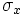
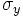
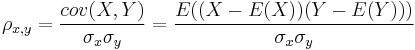
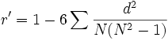
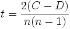

Es gibt eine Anzahl von Koeffizienten, deren Verwendung sich unter unterschiedlicher Bedingungen am besten eignet. Unter ihnen ist der am häufigsten verwendete Produkt-Moment-Korrelationskoeffizient von Pearson.
Pearsons Produkt-Moment-Korrelationskoeffizient
Pearsons Produkt-Moment-Korrelationskoeffizient misst die lineare Beziehung zwischen zwei Variablen.
Angenommen  und  sind die jeweiligen Standardabweichungen der zwei zufälligen Variablen X und Y. Dann ist Pearsons Produkt-Moment-Korrelationskoeffizient zwischen den Variablen

wobei E(.) den erwarteten Wert der Variablen bezeichnet und cov(.) die Kovarianz.
Um diese Methode zu verwenden, sollte sicher gestellt sein, dass die Intervalldaten in paarweisen Beobachtungen vorliegen und die Variablen normal verteilt sind. Die Daten sollten keine extremen Werte enthalten, weil sie dazu neigen, dass Ergebnis zu beeinträchtigen. Pearsons Produkt-Moment-Korrelationskoeffizient könnte manchmal irreführend klein sein, wenn die Variablen eine nichtlineare Beziehung haben.
Spearman-Korrelationskoeffizient
Der Spearman-Rangkorrelationskoeffizient entspricht einer nicht-parametrischen Messung. Daher ist er für Daten geeignet, die nicht normal verteilt sind. Mit ihm lassen sich nichtlineare Beziehungen zwischen zwei Variablen besser erkennen. Es kann wie folgt berechnet werden:

wobei d die Differenz des statistischen Rangs der entsprechenden Variablen darstellt.
Da der statistische Rang nur eine Ordnungszahl des Werts in einer Liste ist, kann der Spearman-Rangkorrelationskoeffizient sogar berechnet werden, wenn die tatsächlichen Werte unbekannt sind.
Kendall-Korrelationskoeffizient
Der Kendall-Korrelationskoeffizient oder Kendall-tau ist äquivalent zum Spearman R hinsichtlich der Annahmen und statistischen Trennschärfe. Der Kendall-Korrelationskoeffizient bietet mehr als eine intuitive Interpretation. Seine algebraische Struktur ist zudem einfacher. Außerdem erfordert er keine Ordnung der Daten vor der Berechnung.
Der Kendall-Korrelationskoeffizient kann berechnet werden mit

wobei C die Anzahl der übereinstimmenden Paare (Paare der Beobachtungen, die die gleichen Vorzeichen besitzen) und D die Anzahl der nicht übereinstimmenden Paare (Paare der Beobachtungen, die entgegen gesetzte Vorzeichen besitzen) sind.
Für die Korrelationstypen Pearson und Spearman sei
wobei r die Korrelation von zwei Variablen und N die Anzahl der Beobachtungen ist.
t folgt dann einer t-Verteilung mit N-2 Freiheitsgraden. Das beidseitige Signifikanzniveau kann berechnet werden mit:
Für den Kendall-Korrelationstyp sei
wobei
z wird dann durch eine Standardnormalverteilung approximiert. Das beidseitige Signifikanzniveau ist: